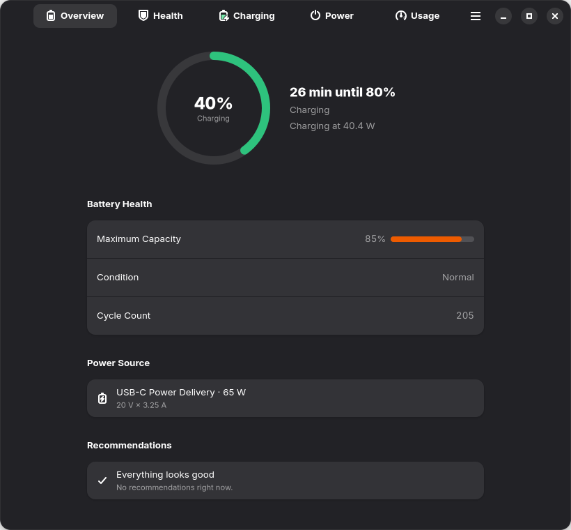
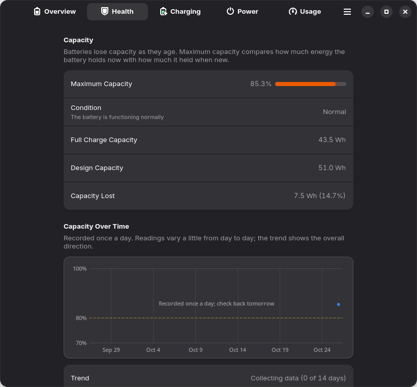
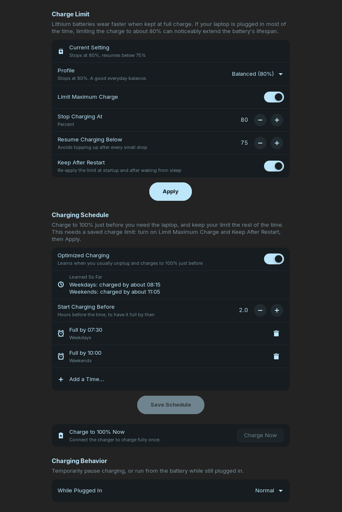
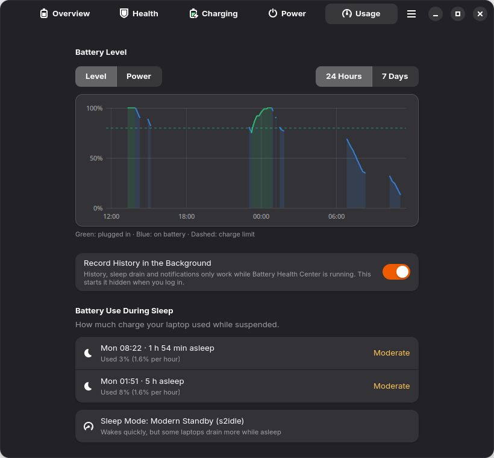
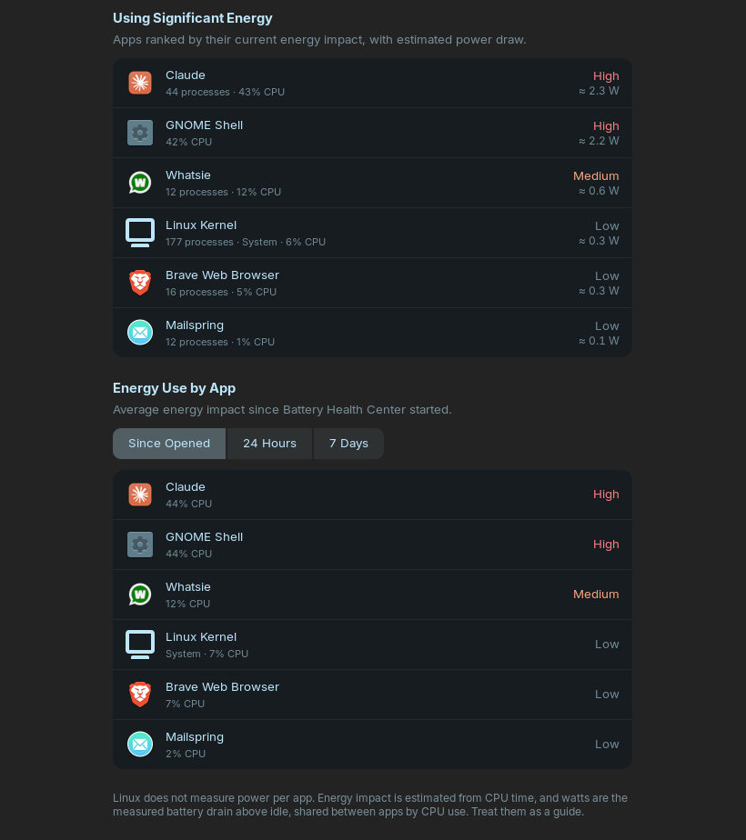
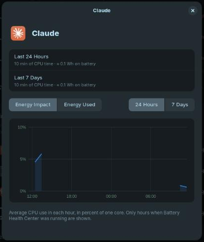
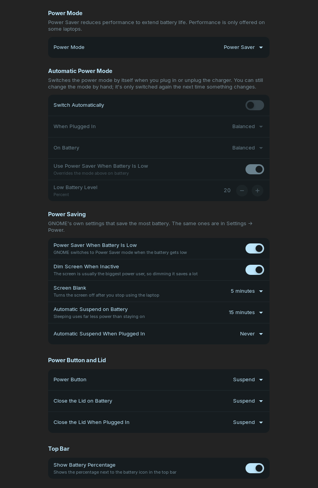

All your laptop battery information in one place, for GNOME: health, cycle count, charge limits and profiles, a charging schedule, sleep drain, power modes, saving tips and which apps use the most energy.
Latest version: 0.4.1 · Languages: English, Spanish (español) and German (Deutsch)







These commands add the repository once. After that, apt keeps the app up to date with the rest of your system.
sudo install -d -m 0755 /etc/apt/keyrings
curl -fsSL https://arios4k.github.io/apt/key.asc | sudo tee /etc/apt/keyrings/battery-health-center.asc > /dev/null
echo "deb [signed-by=/etc/apt/keyrings/battery-health-center.asc] https://arios4k.github.io/apt stable main" | sudo tee /etc/apt/sources.list.d/battery-health-center.list
sudo apt update
sudo apt install battery-health-centerThen open Battery Health Center from your applications.
sudo apt remove battery-health-center
sudo rm /etc/apt/sources.list.d/battery-health-center.list /etc/apt/keyrings/battery-health-center.ascPackages are signed so apt can check they come from the project and weren't changed.
| Key | Battery Health Center Packages |
| Fingerprint | F090 D01D 74F7 14C8 5A95 23CA 4773 367E BD97 6CF5 |
| Download | key.asc |
Compare the fingerprint of the file you downloaded with the one above:
gpg --show-keys --with-fingerprint key.asc
Something not working? The README explains the common errors and how to fix them.
The apt version is the full one: real app icons, per-app energy use, the complete Power page, battery-saving tips, and charge limits and schedules through the normal password prompt. Don't install it together with the snap.